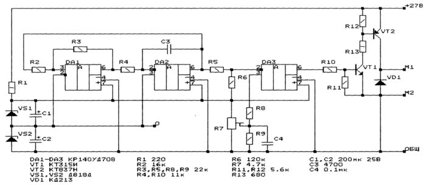
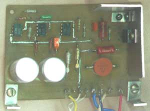

Электронный регулятор
скорости вращения
коллекторного двигателя постоянного тока
на основе широтно-импульсного модулятора
Реостатные схемы регулирования скорости вращения коллекторных двигателей постоянного тока, в том числе с применением силовых транзисторов, на которых падает часть напряжения, обладают низким КПД при малых и средних оборотах. На балластных транзисторных ключах рассеивается значительная тепловая мощность, что ужесточает требования к системе их охлаждения. Поэтому разработка системы регулирования скорости вращения от нулевой до максимальной была проведена на основе импульсной схемы с изменением ширины прямоугольных импульсов напряжения, подаваемых на обмотку двигателя (широтно-импульсная модуляция - ШИМ).
На рис. 1 приведена принципиальная схема регулятора, на рис. 2 показан внешний вид печатной платы.

Рис. 1. Схема принципиальная регулятора скорости вращения двигателя постоянного тока.
На операционных усилителях (ОУ) DA1, DA2 собран генератор треугольного напряжения частотой около 5 кГц. ОУ DA3 включен по схеме компаратора, сравнивающего треугольное напряжение с опорным напряжением, снимаемым с движка потенциометра R7, служащего в качестве задатчика скорости вращения. В момент, когда треугольное напряжение становится меньше опорного, положительный сигнал с выхода компаратора открывает ключ VT1VT2, и на обмотки коллекторного двигателя подается полное напряжение питания (в данном случае 27 вольт). Когда треугольное напряжение больше опорного, ключ VT1VT2 закрыт, и напряжение на двигатель не поступает. При этом диод VD1 выполняет роль демпфирующего, поддерживая ток в обмотках двигателя. Цепочка стабилитронов VS1VS2, подключенная через балластный резистор R1 к источнику питания, служит для обеспечения питания ОУ двухполярным напряжением со средней точкой. По аналогичной схеме могут быть построены ШИМ-регуляторы на другие напряжения питания.

Рис. 2. Внешний вид печатной платы регулятора скорости вращения двигателя постоянного тока (размер платы 70 х 100 мм2).
Ссылки:
10.03.2004
16.06.2010
Альтернативные источники
энергии
Компьютеры и
Интернет
Магнитные поля
Механотронные системы
Перспективные
разработки
Электроника и
технология